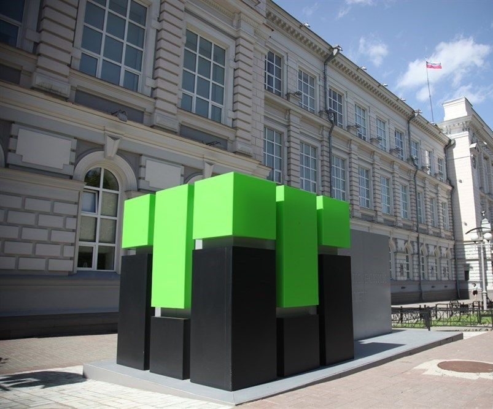

Это второе задание из первого домашнего задания. Это второе задание из первого домашнего задания. Это второе задание из первого домашнего задания. Это второе задание из первого домашнего задания. Это второе задание из первого домашнего задания. Это второе задание из первого домашнего задания. Это второе задание из первого домашнего задания. Это второе задание из первого домашнего задания. Это второе задание из первого домашнего задания. Это второе задание из первого домашнего задания. Это второе задание из первого домашнего задания. Это второе задание из первого домашнего задания. Это второе задание из первого домашнего задания. Это второе задание из первого домашнего задания. Это второе задание из первого домашнего задания. Это второе задание из первого домашнего задания. Это второе задание из первого домашнего задания. Это второе задание из первого домашнего задания. Это второе задание из первого домашнего задания. Это второе задание из первого домашнего задания. Это второе задание из первого домашнего задания. Это второе задание из первого домашнего задания. Это второе задание из первого домашнего задания. Это второе задание из первого домашнего задания.
Это второе задание из первого домашнего задания. Это второе задание из первого домашнего задания. Это второе задание из первого домашнего задания. Это второе задание из первого домашнего задания. Это второе задание из первого домашнего задания. Это второе задание из первого домашнего задания. Это второе задание из первого домашнего задания. Это второе задание из первого домашнего задания. Это второе задание из первого домашнего задания. Это второе задание из первого домашнего задания. Это второе задание из первого домашнего задания. Это второе задание из первого домашнего задания. Это второе задание из первого домашнего задания. Это второе задание из первого домашнего задания. Это второе задание из первого домашнего задания. Это второе задание из первого домашнего задания. Это второе задание из первого домашнего задания. Это второе задание из первого домашнего задания. Это второе задание из первого домашнего задания. Это второе задание из первого домашнего задания. Это второе задание из первого домашнего задания. Это второе задание из первого домашнего задания. Это второе задание из первого домашнего задания. Это второе задание из первого домашнего задания.
Это второе задание из первого домашнего задания. Это второе задание из первого домашнего задания. Это второе задание из первого домашнего задания. Это второе задание из первого домашнего задания. Это второе задание из первого домашнего задания. Это второе задание из первого домашнего задания. Это второе задание из первого домашнего задания. Это второе задание из первого домашнего задания. Это второе задание из первого домашнего задания. Это второе задание из первого домашнего задания. Это второе задание из первого домашнего задания. Это второе задание из первого домашнего задания. Это второе задание из первого домашнего задания. Это второе задание из первого домашнего задания. Это второе задание из первого домашнего задания. Это второе задание из первого домашнего задания. Это второе задание из первого домашнего задания. Это второе задание из первого домашнего задания. Это второе задание из первого домашнего задания. Это второе задание из первого домашнего задания. Это второе задание из первого домашнего задания. Это второе задание из первого домашнего задания. Это второе задание из первого домашнего задания. Это второе задание из первого домашнего задания. Это второе задание из первого домашнего задания. Это второе задание из первого домашнего задания. Это второе задание из первого домашнего задания. Это второе задание из первого домашнего задания. Это второе задание из первого домашнего задания. Это второе задание из первого домашнего задания. Это второе задание из первого домашнего задания. Это второе задание из первого домашнего задания. Это второе задание из первого домашнего задания. Это второе задание из первого домашнего задания. Это второе задание из первого домашнего задания. Это второе задание из первого домашнего задания. Это второе задание из первого домашнего задания. Это второе задание из первого домашнего задания. Это второе задание из первого домашнего задания. Это второе задание из первого домашнего задания. Это второе задание из первого домашнего задания. Это второе задание из первого домашнего задания. Это второе задание из первого домашнего задания. Это второе задание из первого домашнего задания. Это второе задание из первого домашнего задания. Это второе задание из первого домашнего задания. Это второе задание из первого домашнего задания. Это второе задание из первого домашнего задания.
Это второе задание из первого домашнего задания. Это второе задание из первого домашнего задания. Это второе задание из первого домашнего задания. Это второе задание из первого домашнего задания. Это второе задание из первого домашнего задания. Это второе задание из первого домашнего задания. Это второе задание из первого домашнего задания. Это второе задание из первого домашнего задания. Это второе задание из первого домашнего задания. Это второе задание из первого домашнего задания. Это второе задание из первого домашнего задания. Это второе задание из первого домашнего задания. Это второе задание из первого домашнего задания. Это второе задание из первого домашнего задания. Это второе задание из первого домашнего задания. Это второе задание из первого домашнего задания. Это второе задание из первого домашнего задания. Это второе задание из первого домашнего задания. Это второе задание из первого домашнего задания. Это второе задание из первого домашнего задания. Это второе задание из первого домашнего задания. Это второе задание из первого домашнего задания. Это второе задание из первого домашнего задания. Это второе задание из первого домашнего задания.
Это второе задание из первого домашнего задания. Это второе задание из первого домашнего задания. Это второе задание из первого домашнего задания. Это второе задание из первого домашнего задания. Это второе задание из первого домашнего задания. Это второе задание из первого домашнего задания. Это второе задание из первого домашнего задания. Это второе задание из первого домашнего задания. Это второе задание из первого домашнего задания. Это второе задание из первого домашнего задания. Это второе задание из первого домашнего задания. Это второе задание из первого домашнего задания. Это второе задание из первого домашнего задания. Это второе задание из первого домашнего задания. Это второе задание из первого домашнего задания. Это второе задание из первого домашнего задания. Это второе задание из первого домашнего задания. Это второе задание из первого домашнего задания. Это второе задание из первого домашнего задания.  Это второе задание из первого домашнего задания. Это второе задание из первого домашнего задания. Это второе задание из первого домашнего задания. Это второе задание из первого домашнего задания. Это второе задание из первого домашнего задания. Это второе задание из первого домашнего задания. Это второе задание из первого домашнего задания. Это второе задание из первого домашнего задания. Это второе задание из первого домашнего задания. Это второе задание из первого домашнего задания. Это второе задание из первого домашнего задания. Это второе задание из первого домашнего задания. Это второе задание из первого домашнего задания. Это второе задание из первого домашнего задания. Это второе задание из первого домашнего задания. Это второе задание из первого домашнего задания. Это второе задание из первого домашнего задания. Это второе задание из первого домашнего задания. Это второе задание из первого домашнего задания. Это второе задание из первого домашнего задания. Это второе задание из первого домашнего задания. Это второе задание из первого домашнего задания. Это второе задание из первого домашнего задания. Это второе задание из первого домашнего задания. Это второе задание из первого домашнего задания. Это второе задание из первого домашнего задания. Это второе задание из первого домашнего задания. Это второе задание из первого домашнего задания. Это второе задание из первого домашнего задания. Это второе задание из первого домашнего задания. Это второе задание из первого домашнего задания. Это второе задание из первого домашнего задания. Это второе задание из первого домашнего задания. Это второе задание из первого домашнего задания. Это второе задание из первого домашнего задания. Это второе задание из первого домашнего задания. Это второе задание из первого домашнего задания. Это второе задание из первого домашнего задания. Это второе задание из первого домашнего задания. Это второе задание из первого домашнего задания. Это второе задание из первого домашнего задания. Это второе задание из первого домашнего задания. Это второе задание из первого домашнего задания. Это второе задание из первого домашнего задания. Это второе задание из первого домашнего задания. Это второе задание из первого домашнего задания. Это второе задание из первого домашнего задания. Это второе задание из первого домашнего задания. Это второе задание из первого домашнего задания. Это второе задание из первого домашнего задания. Это второе задание из первого домашнего задания. Это второе задание из первого домашнего задания. Это второе задание из первого домашнего задания.